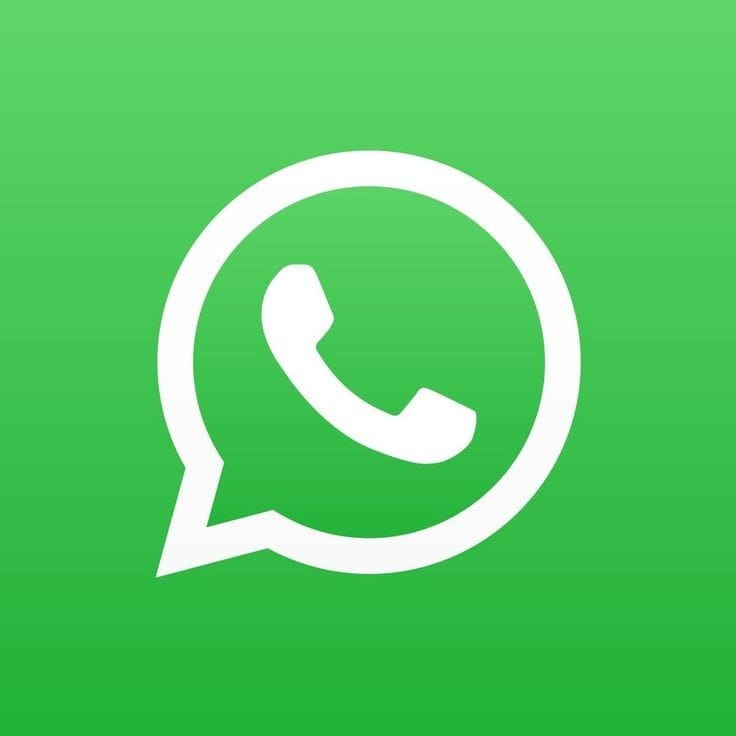
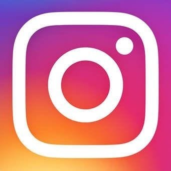
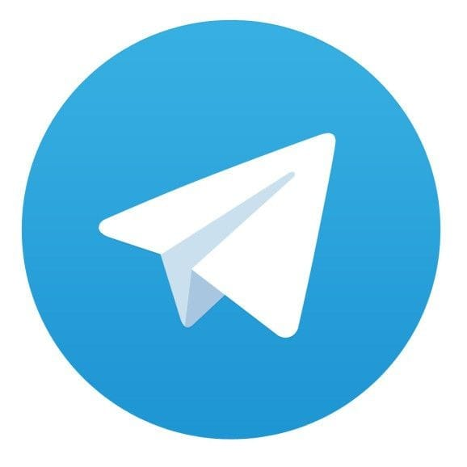
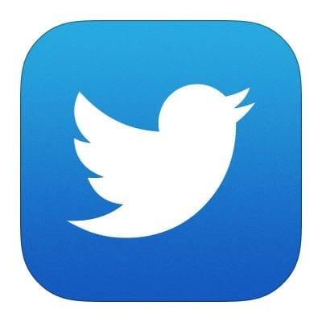

Pada masa sekarang manusia sangat membutuhkan teknologi untuk kemajuan dari bersosialisasi, bermasyarakat, berkeluarga, berteman dan dalam bekerja. Teknologi yang sedang sangat populer adalah beberapa aplikasi yang telah dikembangakn oleh para pengembang (penemu) agar memudahkan manusia, ada beberapa aplikasi yang sudah sangat kita kenal seperti facebook yang merupakan aplikasi yang dikembangkan oleh Mark Zuekerberg yang selanjutnya mengembangkan whatsapp, dan juga lainnya contohnya yang terbaru adalah aplikasi instead. Aplikasi Instead adalah termasuk aplikasi yang dikembangkan oleh Meta yang dibuat oleh Mark Zuekerberg. Selain aplikasi yang dibuat oleh orang barat ada juga beberapa aplikasi yang dibuat oleh orang-orang dari Indonesia, seperti gojek, grab, dan sebagainya. Indonesia termasuk negara dengan pemakaian social media terbanyak bahkan penonton Youtube dari negara Indonesia termasuk yang tertinggi, sehingga tidak heran ada beberapa aplikasi juga selain Youtube yang sering digunakan oleh masyarakat kita. Hingga Januari 2023, tercatat jumlah pengguna media sosial di Indonesia mencapai 167 juta orang. Jumlah tersebut setara 78 persen dari jumlah total pengguna internet di Indonesia yang mencapai 212,9 juta.
Berikut beberapa aplikasi yang banyak digunakan di Indonesia:
1. WhatsApp

WhatsApp adalah aplikasi pesan instan yang sangat populer di Indonesia. Dengan WhatsApp, pengguna dapat mengirim pesan teks, suara, dan gambar, serta membuat panggilan suara dan video.
Aplikasi ini menyediakan fitur grup, di mana pengguna dapat membuat grup untuk berbicara dengan teman atau keluarga mereka.
WhatsApp sangat berguna untuk berkomunikasi dengan orang-orang yang jauh dari kita, atau untuk berbagi informasi secara cepat dan mudah.
Sepanjang 2022, WhatsApp digunakan oleh 92,1 persen warganet yang berusia 16-64 tahun.
2. Instagram

Peringkat kedua ditempati oleh Instagram. Instagram menjadi aplikasi dengan pengguna sebanyak 86,5 persen warganet berusia 16-64 tahun.
Instagram adalah platform media sosial berbagi foto dan video yang sangat populer di Indonesia. Dengan Instagram, pengguna dapat membagikan momen mereka dengan orang lain, serta mengikuti akun orang lain dan melihat apa yang mereka bagikan.
Aplikasi ini juga menyediakan fitur Stories, yang memungkinkan pengguna untuk membagikan momen mereka dalam bentuk video atau foto selama 24 jam.
Aplikasi Instagram sangat berguna untuk membagikan momen-momen kehidupan, mengikuti tren terbaru, dan mempromosikan bisnis atau produk.
3. Facebook
Facebook adalah platform media sosial terbesar di dunia dan masih sangat populer di Indonesia.
Aplikasi ini menjadi media sosial nomor tiga paling populer di Indonesia. Jumlah pengguna Facebook mencapai 83,8 persen.
Dengan Facebook, pengguna dapat membuat profil pribadi, menghubungkan dengan teman dan keluarga, bergabung dengan grup, serta mengikuti halaman bisnis atau tokoh publik.
Facebook juga menyediakan fitur untuk berbagi konten seperti foto, video, atau artikel. Aplikasi ini sangat berguna untuk berkomunikasi dengan orang-orang yang jauh dari kita, mempromosikan bisnis atau produk, dan mendapatkan informasi terbaru.
4. Tiktok
Meskipun terbilang masih baru, Tiktok adalah platform media sosial berbagi video yang sangat populer di Indonesia.
Tiktok memungkinkan pengguna untuk membuat video pendek dengan lagu atau suara yang sedang tren, serta menambahkan filter dan efek khusus.
Aplikasi Tiktok sangat berguna untuk berbagi kreativitas, mengikuti tren terbaru, dan mempromosikan bisnis atau produk. Di Indonesia, pengguna Tiktok mencapai 70,8 persen.
5. Telegram

Selain WhatsApp, aplikasi pesan instan yang cukup populer di Indonesia adalah Telegram.
Telegram memungkinkan pengguna untuk membuat grup dan saluran, serta berbagi pesan, file, foto, dan video. Selain itu, Telegram juga menyediakan fitur untuk mengirim pesan yang dienkripsi end-to-end, yang sangat berguna untuk privasi dan keamanan.
Di Indonesia, pengguna aplikasi Telegram mencapai 64,3 persen.
6. Twitter/ X

Salah satu pemain lama yang masih bertahan adalah Twitter. Di Indonesia, penggunanya mencapai 60,2 persen.
Twitter memungkinkan pengguna untuk mengirim tweet, yaitu pesan pendek dengan batasan karakter, serta mengikuti akun orang lain dan melihat apa yang mereka tweetkan. Twitter sangat berguna untuk mendapatkan informasi terbaru, mengikuti tren terbaru, dan mempromosikan bisnis atau produk.

Namun pada akhir juli tahun 2023 ini Elon Musk memutuskan untuk merubah ikon dan nama Twitter menjadi "X". Ikon dari aplikasi yang sebelumnya merupakan burung biru berubah menjadi logo simbol X.
Dikutip dari akun X personalnya, Musk menjelaskan X mampu membagi konten digital apapun tanpa dibatasi karakter. Malah nantinya kamu bisa mengunggah video hingga berjam-jam lho! “X adalah simbol dari masa depan cerah dan berani. X juga melambangkan eksplorasi, eksperimen, dan ekspresi.
7. Facebook Messenger

Facebook Messenger adalah aplikasi pesan instan yang terkait dengan Facebook, dan masih sangat populer di Indonesia.
Aplikasi ini memungkinkan pengguna untuk mengirim pesan teks, suara, dan gambar, serta membuat panggilan suara dan video. Facebook Messenger juga menyediakan fitur untuk berbagi file dan lokasi.
Di Indonesia, pengguna Facebook Messenger mencapai 51,9 persen.